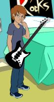
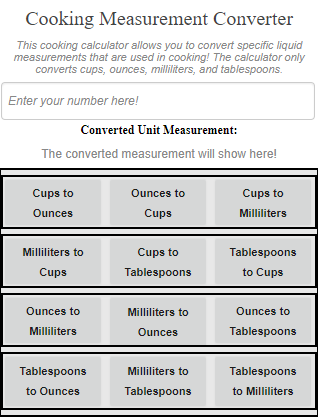

This is the week 5 assignment done on Scratch. It is a game where you are a fruit bat, trying to eat as many fruits as you can!

This scratch project is for the week 6 assignment. It shows an animation of my memory of getting my first guitar!
Clicking the picture below will download the Cooking Calculator I have created for my week 10 assignment!
